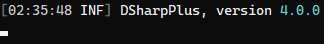

Using a Third Party Logger
While the default logging implementation will meet the needs of most, some may desire to make use of a more robust implementation which provides more features. Thankfully, DSharpPlus allows you to use any logging library which has an implementation for the logging abstractions provided by Microsoft.
Serilog, one of the more popular logging libraries, will be used to demonstrate. This will simply be a brief demo, so we won't go into the configuration of Serilog. You'll want to head on over to their wiki page to learn about that!
We'll need to install both the Serilog and Serilog.Extensions.Logging packages from NuGet, along with at least one
of the many available sinks. Our example here will only use the Serilog.Sinks.Console sink.
Start off by creating a new LoggerConfiguration instance, slap .WriteTo.Console().CreateLogger() onto the end of it,
then directly assign that to the static Logger property on the Log class.
Log.Logger = new LoggerConfiguration()
.WriteTo.Console()
.CreateLogger();
This will make a new Serilog logger instance which will write to the console sink.
Next, create a new variable and assign it a new LoggerFactory instance which calls AddSerilog().
var logFactory = new LoggerFactory().AddSerilog();
Then assign that variable to the @DSharpPlus.DiscordConfiguration.LoggerFactory property of your of @DSharpPlus.DiscordConfiguration.
new DiscordConfiguration()
{
LoggerFactory = logFactory
}
Altogether, you'll have something similar to this:
using Microsoft.Extensions.Logging;
using Serilog;
public async Task MainAsync()
{
Log.Logger = new LoggerConfiguration()
.WriteTo.Console()
.CreateLogger();
var logFactory = new LoggerFactory().AddSerilog();
var discord = new DiscordClient(new DiscordConfiguration()
{
LoggerFactory = logFactory
});
}
And that's it! If you now run your bot, you'll see DSharpPlus log messages formatted and displayed by Serilog.
